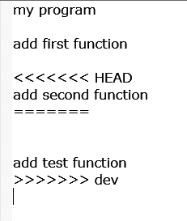
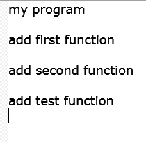
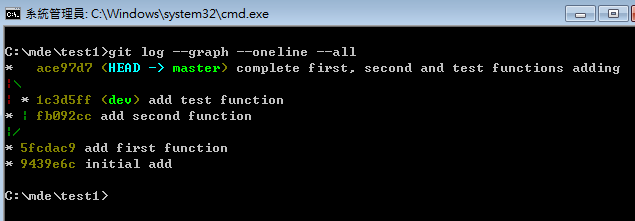

Git基本練習
啟動 p37 可攜系統
在其中一個 Dos 命令列中, 輸入:
c:
表示要從 y: 槽切換到 c: 槽, 然後再下:
cd \
表示要更換目錄到 c: 槽的根目錄. 接下來建立一個 test 目錄:
mkdir test
然後更換目錄到此 test 目錄中.
cd test
接下來要執行 git 指令, 表示要將 test 起始為 Git 的倉儲:
git init
這時, c:\test 目錄中會新增一個 .git 目錄, 表示現在這個 c:\test 已經是 Git 倉儲.
接下來要利用 SciTE 編輯器, 在 test 目錄中建立一個 myprogram.txt 文字檔案, 在此之前, 請利用 SciTE 的下拉式功能表 Options 中的 Open Global Options File 開啟 SciTEGlobal.properties 設定檔案, 找到第 137 行的
load.on.activate=1
去掉原先最前頭的 "#" 符號, 然後存檔, 之後關閉所有開啟的 SciTE 編輯器, 如此, 可以讓 SciTE 所開啟的檔案, 內容有修改時, 可以即時呈現在編輯區中.
接著, 重新在 Dos 命令列中輸入:
y:\SciTE\bin\Sc1.exe
開啟已經修改 SciTEGlobal.properties 設定檔案之後的 SciTE 編輯區, 並且在 myprogram.txt 檔案中, 只加入一行:
my program
接著存檔, 這時 c:\test 目錄中除了有 .git 目錄, 又多了一個 myprogram.txt 檔案.
接下來要對 c:\test 倉儲進行新增與提交流程, 將 myprogram.txt 納入 .git 的版次管理.
git add myprogram.txt
git commit -m "initial add"
這時, c:\test 倉儲中已經有一個改版的記錄, 接下來再編輯 myprogram.txt 檔案. 在其中的 "my program" 字串後, 連按兩個 Enter 後, 加入:
first function
然後存檔, 接著再執行 git add 與 git commit:
git add .
git commit -m "add first function"
接著重覆上述編輯動作, 新增 "second function"
然後, 再執行 git add 與 git commit :
git add .
git commit -m "add second function"
這時, 使用者已經可以利用:
git log
看到倉儲中已經有三個提交. 分別為:
a3a2eb3 add second function
9295dfd add first function
3019d3f initial add
這時若希望在加入 first function 版本狀態時, 新增一個測試功能, 若通過測試符合需求, 則併入已經納入 second function 的版本中, 若不符合需求, 則可將該測試分支刪除.
先準備將工作目錄, 導回 "add first function" 的提交版本.
git checkout 9295dfd
然後以此提交版本內容, 新增一個 dev 分支:
git branch dev
然後利用 git checkout 在工作目錄中導出 dev 的版本 (其實, 修改前的 dev 狀態與 "add first function" 提交時相同
git checkout dev
接下來, 對 myprogram.txt 改版, 在 first function 字串後, 連按兩個 Enter 後, 輸入:
add test function
myprogram.txt 存檔後, 接著, 進行另一次的新增與提交.
git add .
git commit -m "add test function"
這時若希望看到各提交點間的關係, 可以利用:
git log --graph --oneline --all
然後, 假設該測試功能已經通過, 準備與 add second function 後的版本進行合併, 這時 git 出現 myprogram.txt 合併衝突, 因為 first function 後, 已經加入 seconf function, 但是 dev 分支是在 first function 加入後所導出的版本, 因此使用者在合併當下, 必須決定 add second function 與 add test function, 是只保留其中一項功能, 或者同時保留.
git checkout master
將工作目錄轉為 master 的版本, 然後將 dev 分支的內容合併進來:
git merge dev
這時的 myprogram.txt 內容為:

必須要刪除衝突標註符號, 同時保留 add second function 與 add test function, 存檔後成為:

最後對此一合併後的版本, 進行新增與提交:
git add .
git commit -m "complete first, second and test functions adding"
再以 git log --oneline --graph --all 檢查各提交間的關聯, 畫面如下圖所示:

利用以上方式管理檔案版次的好處是, 使用者可以透過高效能的 Git 工具, 導出各提交點的版本, 或者從任一版本建立分支進行各種測試, 不會影響到其他提交版本資料的發布, 等到近端的 git 倉儲進一步推送到遠端的伺服器時, 遠端倉儲不僅可以提供協同, 也可提升資料保全效益, 無論是近端或遠端電腦硬碟發生問題, 都可以從任一參與協同的倉儲中回復所有已經提交的各版本內容.
最後要將工作目錄導向最初 initial add 提交時的版本:
git checkout 9439e67
導回 add first function 時的版本:
git checkout 5fcdac9
導回 add second function 時的版本:
git checkout fb092cc
導回 dev 時的狀態:
git checkout 1c3d5ff
將工作目錄導回最後 master 合併 dev 分支的版本:
git checkout ace97d7
將上述 test (畫面中為 test1) 目錄壓縮後: cp_w3_test_repo.7z
經過上述的 Git 近端指令操作, 可以了解在程式開發過程, 可以透過 Git 分散式版本管理系統的功能, 以非常具有彈性的流程進行程式碼的編寫, 尤其當協同開發人員眾多時, Git 與 Github 將更能發揮其條理開發的特定, 並且安全地保存各版次資料內容.